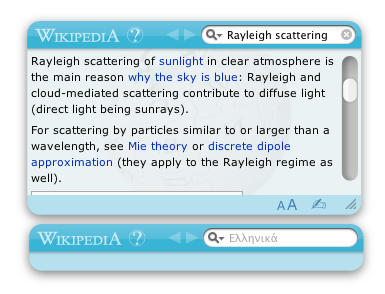

Wikipedia Widget
A Dashboard widget for browsing the free, user-created encyclopedia, Wikipedia. Search, view and edit articles right from the Dashboard, complete with pictures and links.
Main Page
Download
Change log
Get Source Code

Download
Features:
- Compatible with any language wikipedia. Click the 'i' button in the lower left corner to access settings, then enter the 2 letter (or more) letter code on the back. Defaults to English (en).
- External links open in your preferred browser.
- Click the 'wikipedia' button to the left of the search field to open the current article or search term in Safari.
- The '?' button to the left of the search field fetches a random article.
- Back and forward buttons with page caching.
- Edit pages by clicking the hand icon in the lower right.
Installation
Apple's Mac OS X 10.4 or later is required.
After downloading, double click the 'Wikipedia.zip' file to unzip. Then double click the resulting 'Wikipedia.wdgt' file to open in Dashboard.
Current Version
1.0.0 (February 13, 2013
11:45am)
- Moved download site from www.whatsinthehouse.com/widgets to wikiwidget.github.com
- Fixed problem with displaying articles.
- More consistent caching location
(for previous changes, see the change log)
Credits
Created by Sean Billig (@sbillig)
Maintained by Spencer Bliven (@sbliven)